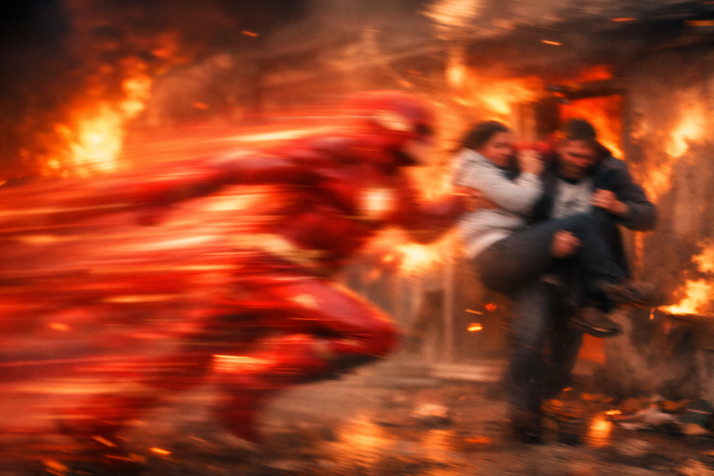
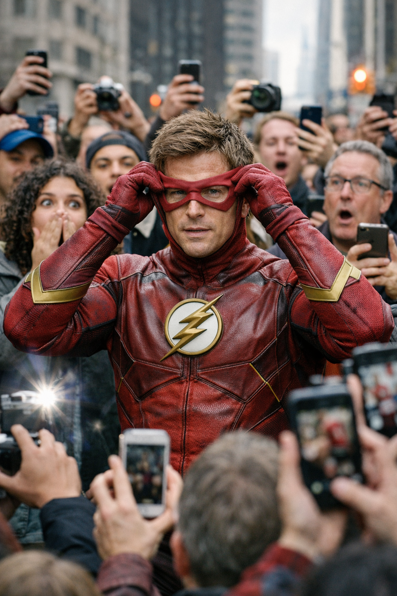

Pessoas são Salvas em incêndio por "Um borrão vermelho"
No dia 25/02 5 pessoas foram tiradas de um prédio em 5 segundos e relataram ter visto um "borrão vermelho"

"Foi milagroso". Essas foram as duas palavras mais ouvidas após o ocorrido dessa tarde, onde pessoas não acreditaram no que aconteceu, suas vidas passaram diante de seus olhos e, em um piscar de olhos, estavam fora do recinto. Ao ser questionado sobre o que aconteceu, Arthur Dias disse que não sabia explicar.
URGENTE!! Flash revela sua identidade e choca a todos!
O herói mascarado revelou nessa tarde, dia 26/02, sua identidade secreta.

Todos ficaram surpresos ao descobrir quem estava debaixo da máscara. Moradores de todos os cantos do Brasil vieram ver esse marc histórico, o herói nacional revela seu rosto a todos!